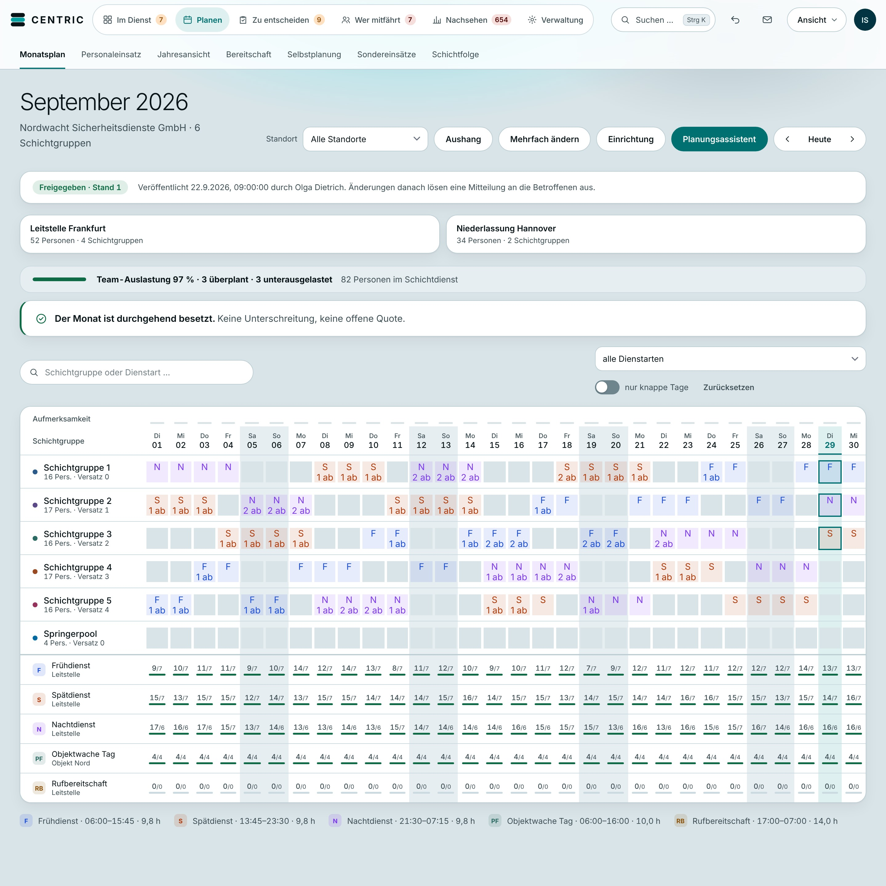
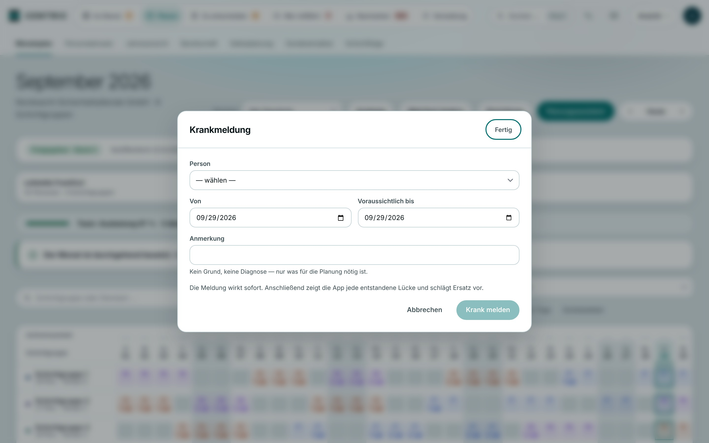
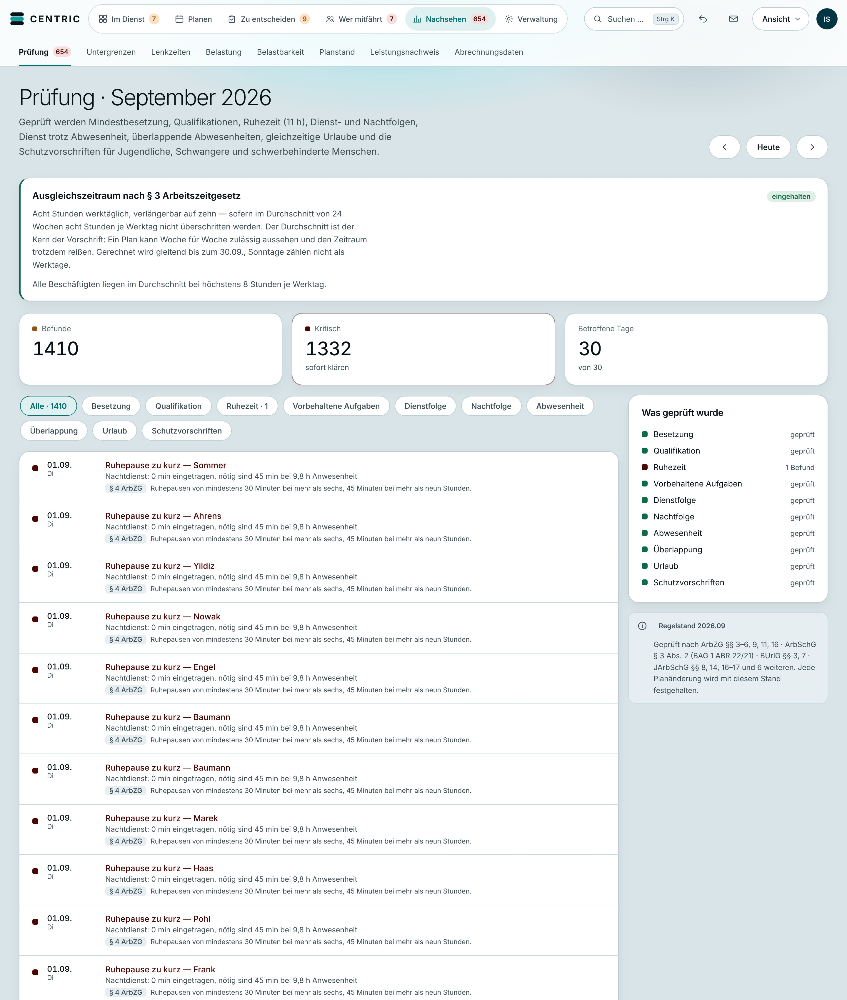

<!doctype html>
<html lang="de"><head><meta charset="utf-8">
<!-- CENTRIC Spec-Ad „Elf Stunden.“ — Szenen als Funktion der Zeit (render(t)).
     Format über ?f=16x9 oder ?f=9x16. Zeiten folgen der Sprachaufnahme
     VO_final_Thorsten_take2_45s (Marken in ../vo/*.marken.json). -->
<style>
@font-face { font-family: "InterD"; src: url(inter-opsz.woff2) format("woff2"); font-weight: 100 900; }
:root { --bg:#04080A; --ink:#F1F6F7; --dim:#8FA3AA; --marke:#02A0A0; --akz:#13B3B3; --tief:#023441; --glanz:#50E8F4; --rot:#FF5A4E;
  --F:#3B5BDB; --S:#D9480F; --N:#7048E8; }
* { box-sizing: border-box; margin: 0; padding: 0; }
html, body { background: var(--bg); overflow: hidden; }
body { font-family: "InterD", sans-serif; font-variation-settings: "opsz" 32; color: var(--ink); -webkit-font-smoothing: antialiased; font-feature-settings: "tnum" 1, "ss01" 1; }
#buehne { position: relative; overflow: hidden; background: var(--bg); }
.abs { position: absolute; }
.sz { position: absolute; inset: 0; display: none; }
.glow { position: absolute; border-radius: 50%; will-change: transform, opacity; }
.h { font-weight: 760; letter-spacing: -0.045em; line-height: .95; white-space: nowrap; }
.l { font-weight: 640; letter-spacing: .32em; text-transform: uppercase; font-size: 15px; color: var(--dim); white-space: nowrap; }
.w { display: inline-block; will-change: transform, opacity, filter; }
.shot { position: absolute; overflow: hidden; border-radius: 22px; background: #D9E4E8;
  box-shadow: 0 50px 120px -30px rgba(0,0,0,.85), 0 0 0 1px rgba(255,255,255,.06); }
.shot img { position: absolute; left: 0; top: 0; display: block; }
.kachel { position: absolute; border-radius: 10px; display: flex; align-items: center; justify-content: center; font-weight: 750; }
.karte { position: absolute; padding: 26px 46px; border-radius: 28px; background: rgba(241,246,247,.06); border: 1px solid rgba(241,246,247,.16);
  white-space: nowrap; font-weight: 740; letter-spacing: -.04em; }
.ring { position: absolute; border-radius: 50%; border: 3px solid var(--glanz); }
#korn { position: absolute; inset: 0; mix-blend-mode: overlay; opacity: .09; pointer-events: none; z-index: 90; }
#vign { position: absolute; inset: 0; pointer-events: none; z-index: 89; background: radial-gradient(120% 90% at 50% 50%, rgba(0,0,0,0) 55%, rgba(0,0,0,.55) 100%); }
</style></head>
<body><div id="buehne">
  <!-- Markenschein -->
  <div class="glow" id="g1" style="background:radial-gradient(closest-side, rgba(2,160,160,.95), rgba(2,160,160,.35) 45%, rgba(2,160,160,0))"></div>
  <div class="glow" id="g2" style="background:radial-gradient(closest-side, rgba(2,52,65,1), rgba(2,52,65,.5) 50%, rgba(2,52,65,0))"></div>
  <div class="glow" id="g3" style="background:radial-gradient(closest-side, rgba(80,232,244,.9), rgba(80,232,244,.25) 45%, rgba(80,232,244,0))"></div>
  <!-- Motion-Graphics-Ebene: Lineal mit Zeitmarken unten, Kapitelzähler oben -->
  <svg class="abs" id="mg" style="left:0;top:0;z-index:40;overflow:visible"></svg>
  <div class="abs l" id="kap" style="z-index:41;font-size:18px"></div>
  <div id="welt" class="abs" style="left:0;top:0;z-index:10"></div>
  <canvas id="korn"></canvas><div id="vign"></div>
</div>
<script>
const Q = new URLSearchParams(location.search);
const HOCH = Q.get("f") === "9x16";
const W = HOCH ? 1080 : 1920, H = HOCH ? 1920 : 1080;
const B = document.getElementById("buehne"); B.style.width = W + "px"; B.style.height = H + "px";
document.body.style.width = W + "px"; document.body.style.height = H + "px";
const welt = document.getElementById("welt"); welt.style.width = W + "px"; welt.style.height = H + "px";
const S = HOCH ? 1.0 : 1.0;                      // Grundmaßstab
const CX = W / 2, CY = H / 2;

const NS = "http://www.w3.org/2000/svg";
/* ---------- Werkzeuge ---------- */
const clamp = (x, a = 0, b = 1) => Math.min(b, Math.max(a, x));
const prog = (t, a, d) => clamp((t - a) / d);
const eO = (x) => 1 - Math.pow(1 - x, 5);                 // schnell, weich auslaufend
const eI = (x) => x * x * x;
const eIO = (x) => x < .5 ? 16 * x ** 5 : 1 - Math.pow(-2 * x + 2, 5) / 2;
const eBack = (x) => { const c = 1.25; return 1 + (c + 1) * Math.pow(x - 1, 3) + c * Math.pow(x - 1, 2); };
const lerp = (a, b, x) => a + (b - a) * x;
const el = (tag, cls, html, parent = welt, style = "") => { const e = document.createElement(tag); if (cls) e.className = cls;
  if (html != null) e.innerHTML = html; e.style.cssText = style; parent.appendChild(e); return e; };
const sz = (id) => { const e = el("div", "sz"); e.id = id; return e; };
const set = (e, o) => { for (const k in o) e.style[k] = o[k]; };
const tf = (e, x, y, s = 1, r = 0, extra = "") => { e.style.transform = `translate(${x}px,${y}px) scale(${s}) rotate(${r}deg) ${extra}`; };
const zeige = (e, t, a, b) => { const v = t >= a && t < b; e.style.display = v ? "block" : "none"; return v; };
// Wörter als Spannen, damit sie einzeln animiert werden können
function woerter(parent, text, cls = "w") { return text.split(" ").map((w, i, a) => el("span", cls, w + (i < a.length - 1 ? "&nbsp;" : ""), parent)); }
// Wort hereinrauschen lassen: von rechts mit Unschärfe, Bewegungsunschärfe kommt zusätzlich aus dem Rendern
function rein(e, t, a, d = .45, dx = 120, dy = 0) { const x = eO(prog(t, a, d));
  e.style.opacity = clamp(x * 1.6); e.style.transform = `translate(${(1 - x) * dx}px,${(1 - x) * dy}px)`; e.style.filter = `blur(${(1 - x) * 14}px)`; }

/* ---------- Markenschein ---------- */
const g1 = document.getElementById("g1"), g2 = document.getElementById("g2"), g3 = document.getElementById("g3");
function schein(t, staerke = 1, fokusY = .5) {
  const s = Math.min(W, H);
  set(g1, { width: s * 1.1 + "px", height: s * 1.1 + "px", opacity: .42 * staerke });
  tf(g1, CX - s * .55 + Math.sin(t * .23) * W * .22, H * fokusY - s * .55 + Math.cos(t * .17) * H * .16, 1 + .08 * Math.sin(t * .4));
  set(g2, { width: s * 1.5 + "px", height: s * 1.5 + "px", opacity: .9 });
  tf(g2, CX - s * .75 + Math.cos(t * .13) * W * .25, CY - s * .75 + Math.sin(t * .19) * H * .2);
  set(g3, { width: s * .45 + "px", height: s * .45 + "px", opacity: .22 * staerke });
  tf(g3, CX - s * .22 + Math.sin(t * .31 + 2) * W * .3, CY - s * .22 + Math.cos(t * .27 + 1) * H * .25);
}

/* ---------- Korn ---------- */
const korn = document.getElementById("korn"); korn.width = W / 2; korn.height = H / 2;
const kc = korn.getContext("2d"); const kimg = kc.createImageData(korn.width, korn.height);
const KORN = []; { let s = 12345; for (let n = 0; n < 6; n++) { const im = kc.createImageData(korn.width, korn.height), d = im.data;
  for (let i = 0; i < d.length; i += 4) { s = (s * 1103515245 + 12345) & 0x7fffffff; const v = (s >> 16) & 255; d[i] = d[i + 1] = d[i + 2] = v; d[i + 3] = 255; } KORN.push(im); } }
let kornZuletzt = -1;
function koernen(seed) { const n = seed % 6; if (n === kornZuletzt) return; kornZuletzt = n; kc.putImageData(KORN[n], 0, 0); }

/* ---------- Motion-Graphics-Ebene ---------- */
const mg = document.getElementById("mg"); mg.setAttribute("width", W); mg.setAttribute("height", H);
const svg = (tag, attrs, p = mg) => { const e = document.createElementNS(NS, tag); for (const k in attrs) e.setAttribute(k, attrs[k]); p.appendChild(e); return e; };
const lineal = svg("g", {});
for (let i = 0; i < 140; i++) svg("line", { x1: 0, x2: 0, y1: 0, y2: i % 10 === 0 ? 14 : 6, stroke: "rgba(241,246,247,.22)", "stroke-width": 1 }, lineal);
const kap = document.getElementById("kap");
const KAPITEL = [[1.67, "01 · Ruhezeit"], [6.76, "02 · Kopfarbeit"], [15.27, "03 · Schichtmodell"], [20.27, "04 · Ausfall"], [24.75, "05 · Prüfung"], [28.32, "06 · Team"], [33.53, "07 · Branchen"]];

/* =====================================================================
   SZENEN
   ===================================================================== */

/* S1 + S2 · „Elf Stunden.“ → Zeitbogen ------------------------------- */
const s1 = sz("s1");
const elf = el("div", "abs h", "11", s1, `font-size:${HOCH ? 640 : 700}px;font-weight:820;letter-spacing:-.07em;left:0;top:0`);
const elfL = el("div", "abs l", "Stunden", s1, "font-size:22px;color:var(--ink);letter-spacing:.6em");
const uhr = document.createElementNS("http://www.w3.org/2000/svg", "svg"); uhr.classList.add("abs"); s1.appendChild(uhr); uhr.setAttribute("width", 900); uhr.setAttribute("height", 900);
const striche = []; for (let i = 0; i < 60; i++) { const a = (i / 60) * Math.PI * 2 - Math.PI / 2, r1 = 410, r2 = i % 5 === 0 ? 372 : 392;
  const l = document.createElementNS(NS, "line"); l.setAttribute("x1", 450 + Math.cos(a) * r1); l.setAttribute("y1", 450 + Math.sin(a) * r1);
  l.setAttribute("x2", 450 + Math.cos(a) * r2); l.setAttribute("y2", 450 + Math.sin(a) * r2);
  l.setAttribute("stroke", i % 5 === 0 ? "#50E8F4" : "rgba(241,246,247,.45)"); l.setAttribute("stroke-width", i % 5 === 0 ? 4 : 2); l.setAttribute("stroke-linecap", "round");
  uhr.appendChild(l); striche.push(l); }
// Zeitbogen
const bogen = document.createElementNS("http://www.w3.org/2000/svg", "svg"); bogen.classList.add("abs"); bogen.style.left = "0"; bogen.style.top = "0"; s1.appendChild(bogen); bogen.setAttribute("width", W); bogen.setAttribute("height", H);
const bx1 = HOCH ? 140 : 360, bx2 = W - bx1, by = HOCH ? H * .56 : H * .64;
const bLinie = document.createElementNS(NS, "path"); bLinie.setAttribute("fill", "none"); bLinie.setAttribute("stroke", "rgba(241,246,247,.18)"); bLinie.setAttribute("stroke-width", 2);
bLinie.setAttribute("d", `M${bx1} ${by} Q ${CX} ${by - (HOCH ? 520 : 430)} ${bx2} ${by}`); bogen.appendChild(bLinie);
const bLicht = bLinie.cloneNode(); bLicht.setAttribute("stroke", "url(#bv)"); bLicht.setAttribute("stroke-width", 7); bLicht.setAttribute("stroke-linecap", "round"); bogen.appendChild(bLicht);
bogen.insertAdjacentHTML("afterbegin", `<defs><linearGradient id="bv" x1="0" x2="1"><stop offset="0" stop-color="#02A0A0"/><stop offset="1" stop-color="#50E8F4"/></linearGradient></defs>`);
const bLen = 2600; bLicht.setAttribute("stroke-dasharray", bLen);
const pkt = (x, txt, sub) => { const g = el("div", "abs", `<div style="width:22px;height:22px;border-radius:50%;background:var(--glanz);box-shadow:0 0 30px var(--glanz);margin:0 auto 18px"></div>
  <div class="h" style="font-size:${HOCH ? 54 : 58}px;text-align:center">${txt}</div><div class="l" style="text-align:center;margin-top:12px">${sub}</div>`, s1, `width:360px;left:${x - 180}px;top:${by - 11}px`); return g; };
const p1 = pkt(bx1, "21:30", "Dienstende"), p2 = pkt(bx2, "08:30", "Dienstbeginn");
const ruheZ = el("div", "abs", "", s1, `width:${W}px;left:0;text-align:center`);
const ruheZeile = el("div", "h", "", ruheZ, `font-size:${HOCH ? 74 : 84}px;font-weight:700`);
const ruheW = woerter(ruheZeile, "Ruhe zwischen zwei Diensten.");
const stempel = el("div", "abs", `<div style="padding:14px 26px;border:3px solid var(--glanz);border-radius:14px;color:var(--glanz);font-weight:760;font-size:34px;letter-spacing:.02em">§ 5 ArbZG</div>`, s1);
const gesetz = el("div", "abs l", "So steht es im Gesetz", s1, "color:var(--ink)");

function szene1(t) {
  if (!zeige(s1, t, 0, 6.76)) return;
  // 11 schießt herein (0.12–0.5), steht, wird dann zur Zahl über dem Bogen
  const ein = eO(prog(t, .12, .38));
  const ab = eIO(prog(t, 1.67, .55));
  const fs = HOCH ? 640 : 700, wd = fs * .98;
  const x0 = CX - wd / 2 + (1 - ein) * 1500, y0 = CY - fs * .56;
  const zielS = HOCH ? .3 : .26, zx = CX - wd / 2, zy = by - (HOCH ? 520 : 430) * .5 - fs * .56 - 30;
  tf(elf, lerp(x0, zx, ab), lerp(y0, zy - 40, ab), lerp(1, zielS, ab) * lerp(1.15, 1, ein), (1 - ein) * -4);
  elf.style.opacity = clamp(ein * 2) * (1 - eI(prog(t, 6.2, .5)));
  elf.style.filter = `blur(${(1 - ein) * 18}px)`;
  elf.style.transformOrigin = "50% 56%";
  // „Stunden“ unter der 11
  const lx = eO(prog(t, .55, .4)); set(elfL, { opacity: lx * (1 - ab), left: CX - 220 + "px", top: CY + fs * .36 + "px", width: "440px", textAlign: "center" });
  tf(elfL, 0, (1 - lx) * 30);
  // Uhrstriche zeichnen sich im Kreis, verschwinden mit dem Wechsel
  set(uhr, { left: CX - 450 + "px", top: CY - 450 + "px", opacity: 1 - ab }); tf(uhr, 0, 0, lerp(1, 1.6, ab));
  const n = Math.floor(clamp((t - .4) / 1.0) * 60); striche.forEach((l, i) => l.style.opacity = i < n ? 1 : 0);
  // Bogen: Punkte landen, Licht füllt den Bogen synchron zu „So viel Ruhe … Diensten“ (1.72–4.35)
  const pa = eO(prog(t, 1.85, .45)), pb = eO(prog(t, 2.05, .45));
  p1.style.opacity = pa; tf(p1, (1 - pa) * -200, 0); p2.style.opacity = pb; tf(p2, (1 - pb) * 200, 0);
  bLinie.style.opacity = pa; bLicht.setAttribute("stroke-dashoffset", bLen * (1 - eIO(prog(t, 2.1, 2.2))));
  set(ruheZ, { top: (HOCH ? by + 260 : by + 150) + "px" });
  const wz = [2.3, 2.75, 3.1, 3.55]; ruheW.forEach((w, i) => rein(w, t, wz[i], .5, 90));
  // Stempel § 5 ArbZG (4.64) mit Landung
  const st = prog(t, 4.62, .3); stempel.style.opacity = st > 0 ? 1 : 0;
  set(stempel, { left: CX - 120 + "px", top: (HOCH ? by - 760 : by - 560) + "px" });
  tf(stempel, 0, 0, lerp(2.2, 1, eO(st)), lerp(-14, -6, eO(st)));
  stempel.style.filter = `blur(${(1 - eO(st)) * 10}px)`;
  const gg = eO(prog(t, 4.9, .4)); set(gesetz, { opacity: gg, left: CX - 200 + "px", width: "400px", textAlign: "center", top: (HOCH ? by - 640 : by - 470) + "px" });
  // Wechsel zu S3: alles kippt nach oben weg
  const raus = eIO(prog(t, 6.3, .46)); s1.style.transform = `translateY(${-raus * H * .5}px)`; s1.style.opacity = 1 - raus;
}

/* S3 · Kopfarbeit: Wortkarten in 3D-Tiefe ----------------------------- */
const s3 = sz("s3"); s3.style.perspective = "1400px";
const chaos = el("div", "abs", "", s3, `left:0;top:0;width:${W}px;height:${H}px`);
const DIENSTE = [["F", "--F"], ["S", "--S"], ["N", "--N"]];
const kacheln = []; { let s = 7; const r = () => (s = (s * 16807) % 2147483647) / 2147483647;
  const cols = HOCH ? 9 : 16, rows = HOCH ? 16 : 9, kw = W / cols, kh = H / rows;
  for (let y = 0; y < rows; y++) for (let x = 0; x < cols; x++) { if (r() < .35) continue; const d = DIENSTE[Math.floor(r() * 3)];
    const k = el("div", "kachel", d[0], chaos, `width:${kw * .62}px;height:${kh * .62}px;font-size:${kh * .26}px;color:var(${d[1]});background:color-mix(in srgb, var(${d[1]}) 16%, transparent);border:1px solid color-mix(in srgb, var(${d[1]}) 35%, transparent)`);
    kacheln.push({ k, x: x * kw + kw * .19, y: y * kh + kh * .19, ph: r() * 6.28, sp: .6 + r() * 1.4 }); } }
const kopfA = el("div", "abs h", "", s3, `font-size:${HOCH ? 64 : 72}px;font-weight:650;left:${HOCH ? 80 : 140}px;top:${HOCH ? 300 : 150}px;white-space:normal;width:${HOCH ? 900 : 1500}px;line-height:1.08`);
const kA = woerter(kopfA, "Wer Schichten plant, muss an all das denken.");
const KARTEN = [["Ruhezeiten.", 9.24, -360, -140, 4], ["Qualifikationen.", 10.15, 300, 40, -3], ["Wer fehlt?", 11.45, -260, 210, 2], ["Wer kann?", 12.15, 320, 300, -2]];
const karten = KARTEN.map(([txt]) => el("div", "karte", txt, s3, `font-size:${HOCH ? 92 : 112}px`));
function szene3(t) {
  if (!zeige(s3, t, 6.7, 13.62)) return;
  const ein = eO(prog(t, 6.76, .5)); s3.style.opacity = ein;
  // Unruhe der Kacheln wächst bis 13.2
  const unruhe = lerp(.2, 1.6, clamp((t - 6.8) / 6.3));
  const sog = eI(prog(t, 13.23, .35));                     // S4: alles wird in einen Punkt gesogen
  kacheln.forEach((o) => { const j = Math.sin(t * 7 * o.sp + o.ph) * 9 * unruhe, j2 = Math.cos(t * 5 * o.sp + o.ph) * 7 * unruhe;
    const x = lerp(o.x + j, CX, sog), y = lerp(o.y + j2, CY, sog);
    o.k.style.transform = `translate(${x}px,${y}px) rotate(${Math.sin(t * 3 + o.ph) * 6 * unruhe + sog * 180}deg) scale(${1 - sog})`;
    o.k.style.opacity = (.35 + .25 * Math.sin(t * 4 * o.sp + o.ph)) * (1 - sog * .8); });
  const zw = [6.8, 7.05, 7.35, 7.6, 7.92, 8.12, 8.3, 8.5]; kA.forEach((w, i) => rein(w, t, zw[i], .4, 70));
  kopfA.style.opacity = 1 - eI(prog(t, 9.0, .4)); kopfA.style.filter = `blur(${eI(prog(t, 9.0, .4)) * 16}px)`;
  KARTEN.forEach(([txt, a, dx, dy, rot], i) => { const k = karten[i]; const p = eO(prog(t, a - .06, .32));
    const spaeter = KARTEN.filter((x) => x[1] <= t + .06 && x[1] > a).length;    // wie viele kamen danach
    const z = lerp(-1400, 0, p) - spaeter * 380;
    const x = CX + (HOCH ? dx * .45 : dx) - 300, y = CY + (HOCH ? dy * 1.6 : dy) - 80;
    k.style.opacity = p > 0 ? clamp(p * 3) * (1 - sog) : 0;
    k.style.transform = `translate3d(${lerp(x, CX - 300, sog)}px,${lerp(y, CY - 80, sog)}px,${z}px) rotateY(${rot * (1 - p) * 4 + rot}deg) rotateX(${(1 - p) * 20}deg) scale(${1 - sog})`;
    k.style.filter = `blur(${spaeter * 5 + (1 - p) * 10}px)`; });
}

/* S4 · Logo ---------------------------------------------------------- */
const s4 = sz("s4");
const LOGO_SVG = (id) => `<svg viewBox="0 0 100 100" width="100%" height="100%"><defs><linearGradient id="${id}g" x1="55%" y1="0%" x2="100%" y2="70%"><stop offset="0%" stop-color="#F1F6F7"/><stop offset="100%" stop-color="#02A0A0"/></linearGradient><clipPath id="${id}c"><rect x="6" y="8" width="88" height="26" rx="13"/></clipPath></defs>
  <g class="b0"><g clip-path="url(#${id}c)"><rect x="6" y="8" width="88" height="26" rx="13" fill="#F1F6F7"/><path d="M52 8 C74 8 66 34 94 34 L94 8 Z" fill="url(#${id}g)"/></g></g>
  <rect class="b1" x="6" y="37" width="88" height="26" rx="13" fill="#02A0A0"/><rect class="b2" x="6" y="66" width="88" height="26" rx="13" fill="#F1F6F7"/>
  <path class="b3" d="M92 26 C99 30 99 41 90 45 C78 50 62 44 50 47 C38 50 26 58 20 63 C13 69 13 78 20 82" stroke="#F1F6F7" stroke-width="1.9" fill="none" stroke-linecap="round" opacity=".92" pathLength="1" stroke-dasharray="1"/></svg>`;
const marke4 = el("div", "abs", LOGO_SVG("m4"), s4);
const wort4 = el("div", "abs h", "", s4, `font-size:${HOCH ? 96 : 120}px;letter-spacing:.2em;font-weight:720`);
const buch4 = "CENTRIC".split("").map((c) => el("span", "w", c, wort4));
const satz4 = el("div", "abs h", "nimmt dir das ab.", s4, `font-size:${HOCH ? 54 : 58}px;font-weight:500;color:var(--dim);letter-spacing:-.02em`);
const blitz = el("div", "abs", "", s4, `left:0;top:0;width:${W}px;height:${H}px;background:radial-gradient(closest-side, rgba(80,232,244,.9), rgba(80,232,244,0))`);
const kante = el("div", "abs", "", s4, `width:180px;height:${H}px;background:linear-gradient(90deg, transparent, rgba(255,255,255,.35), transparent);mix-blend-mode:overlay`);
function logoBauen(root, t, a) {           // Balken fahren abwechselnd ein, Linie zeichnet sich
  const b = root.querySelectorAll(".b0,.b1,.b2");
  b.forEach((e, i) => { const x = eO(prog(t, a + i * .09, .42)); e.style.transform = `translateX(${(1 - x) * (i % 2 ? 120 : -120)}px)`; e.style.opacity = x; });
  root.querySelector(".b3").style.strokeDashoffset = 1 - eIO(prog(t, a + .25, .6));
}
function szene4(t) {
  if (!zeige(s4, t, 13.3, 15.6)) return;
  const fl = prog(t, 13.3, .35); blitz.style.opacity = (1 - fl) * .55 * (fl > 0 ? 1 : 0); tf(blitz, 0, 0, lerp(.2, 1.4, fl));
  const ms = HOCH ? 230 : 200; set(marke4, { width: ms + "px", height: ms + "px", left: CX - ms / 2 + "px", top: CY - ms / 2 - (HOCH ? 230 : 150) + "px" });
  logoBauen(marke4, t, 13.34);
  const wd = HOCH ? 720 : 900; set(wort4, { left: CX - wd / 2 + 10 + "px", width: wd + "px", textAlign: "center", top: CY - (HOCH ? 40 : 10) + "px" });
  buch4.forEach((s, i) => rein(s, t, 13.5 + i * .045, .45, 0, 60));
  set(satz4, { left: 0, width: W + "px", textAlign: "center", top: CY + (HOCH ? 120 : 150) + "px" }); rein(satz4, t, 13.95, .5, 0, 30);
  const k = prog(t, 14.45, .55); kante.style.opacity = k > 0 && k < 1 ? 1 : 0; tf(kante, lerp(CX - 600, CX + 500, eIO(k)), 0, 1, 12);
  const raus = eIO(prog(t, 15.15, .3)); s4.style.opacity = 1 - raus; s4.style.transform = `scale(${1 + raus * .25})`; s4.style.filter = `blur(${raus * 20}px)`;
}

/* S5 · Schichtmodell: Kachel teilt sich → Zyklus → echter Monatsplan ---- */
const s5 = sz("s5"); s5.style.perspective = "2200px";
const zyk = el("div", "abs", "", s5);
const ZYKLUS = ["·NNNN··", "·SSS·NN", "N···SSS", "S··FF··", "FFF··FF"];          // aus leitung-folge (Zyklusraster, 5 Wochen)
const zk = []; ZYKLUS.forEach((z, r) => z.split("").forEach((c, i) => { const farbe = c === "F" ? "--F" : c === "S" ? "--S" : c === "N" ? "--N" : null;
  const k = el("div", "kachel", c === "·" ? "" : c, zyk, `width:64px;height:64px;font-size:26px;color:${farbe ? `var(${farbe})` : "transparent"};background:${farbe ? `color-mix(in srgb, var(${farbe}) 20%, #0b1418)` : "rgba(241,246,247,.05)"};border:1px solid ${farbe ? `color-mix(in srgb, var(${farbe}) 55%, transparent)` : "rgba(241,246,247,.08)"}`);
  zk.push({ k, r, i }); }));
const s5T = el("div", "abs h", "", s5, `font-size:${HOCH ? 70 : 80}px;font-weight:700;width:${HOCH ? 900 : 700}px;white-space:normal;line-height:1.02`);
const s5a = el("div", "", "Einmal anlegen.", s5T); const s5b = el("div", "", "Jeden Monat gerechnet.", s5T, "color:var(--glanz)");
const s5L = el("div", "abs l", "1 Muster · jeder Tag · keine Jahresgrenze", s5);
const planF = el("div", "shot", ``, s5);
const planI = planF.firstChild;
function szene5(t) {
  if (!zeige(s5, t, 15.2, 20.6)) return;
  // Textblock links (16:9) bzw. oben (9:16)
  set(s5T, HOCH ? { left: "80px", top: "220px" } : { left: "130px", top: "150px" });
  rein(s5a, t, 15.34, .45, -80); rein(s5b, t, 17.46, .45, -80);
  set(s5L, HOCH ? { left: "80px", top: "520px" } : { left: "134px", top: "420px" }); rein(s5L, t, 17.9, .5, -60);
  // Kachel teilt sich: 1 → Woche (15.6) → 5 Wochen (16.2)
  const ox = HOCH ? CX - 255 : CX - 160, oy = HOCH ? 760 : 420;
  const pW = eO(prog(t, 15.55, .45)), pM = eO(prog(t, 16.15, .6));
  const weg = eIO(prog(t, 17.5, .6));
  zk.forEach(({ k, r, i }) => { const erste = r === 0 && i === 1;
    const sichtbar = erste ? 1 : (r === 0 ? pW : pM * clamp((pM * 7) - r * .6));
    const x0 = ox + 1 * 74, y0 = oy, x = ox + i * 74, y = oy + r * 74;
    const tx = lerp(x0, x, r === 0 ? pW : 1), ty = lerp(y0, y, r === 0 ? 0 : pM);
    k.style.opacity = sichtbar * (1 - weg); k.style.transform = `translate(${tx}px,${ty}px) scale(${lerp(.6, 1, sichtbar) * lerp(1, 1.6, weg)})`;
    k.style.filter = `blur(${weg * 18}px)`; });
  const ei = eO(prog(t, 15.27, .4)); zyk.style.opacity = ei;
  // Match-Cut auf den echten Monatsplan, geneigte Fläche, Parallax-Kamera
  const m = eO(prog(t, 17.55, .7)), kam = eIO(prog(t, 17.6, 2.7));
  const fw = HOCH ? 980 : 1130, fh = HOCH ? 760 : 640;
  set(planF, { width: fw + "px", height: fh + "px", left: (HOCH ? CX - fw / 2 : 690) + "px", top: (HOCH ? 760 : 330) + "px", opacity: m });
  planF.style.transform = `translateX(${(1 - m) * 500}px) rotateY(${lerp(-24, -12, kam)}deg) rotateX(${lerp(14, 8, kam)}deg) scale(${lerp(.9, 1, m)})`;
  // Bildausschnitt: Raster des Monatsplans (2x-Bild), Kamera fährt von links nach rechts
  const s = lerp(.62, .78, kam); planI.style.width = 2880 * s + "px";
  planI.style.left = -lerp(80, 1380, kam) * s + "px"; planI.style.top = -lerp(1300, 1400, kam) * s + "px";
  const raus = eIO(prog(t, 20.1, .3)); s5.style.opacity = 1 - raus;
}

/* S6 · Ausfall: Lücke im Plan → Krankmeldung → Ersatz --------------- */
const s6 = sz("s6");
const plan6 = el("div", "shot", ``, s6); const plan6I = plan6.firstChild;
const luecke = el("div", "abs", "", plan6, "border-radius:10px;border:4px solid var(--rot);box-shadow:0 0 40px rgba(255,90,78,.7)");
const scherben = Array.from({ length: 9 }, (_, i) => el("div", "abs", "", s6, `width:${20 + (i * 7) % 24}px;height:${16 + (i * 5) % 20}px;background:#F2C9C5;border-radius:3px`));
const s6T = el("div", "abs h", "", s6, `font-size:${HOCH ? 70 : 78}px;font-weight:700;width:${HOCH ? 920 : 760}px;white-space:normal;line-height:1.05`);
const s6a = el("div", "", "Fällt jemand aus,", s6T); const s6b = el("div", "", "siehst du die Lücke.", s6T, "color:var(--rot)");
const s6c = el("div", "", "Und wer einspringt.", s6T, "color:var(--glanz)");
const dlg = el("div", "shot", ``, s6); const dlgI = dlg.firstChild;
const hint = el("div", "abs", "", dlg, "height:5px;border-radius:3px;background:var(--akz)");
const tipp6 = el("div", "ring", "", s6, "width:90px;height:90px");
function szene6(t) {
  if (!zeige(s6, t, 20.2, 24.95)) return;
  const ein = eO(prog(t, 20.27, .4)); s6.style.opacity = ein;
  set(s6T, HOCH ? { left: "80px", top: "200px" } : { left: "130px", top: "330px" });
  rein(s6a, t, 20.38, .4, -70); rein(s6b, t, 21.72, .4, -70); rein(s6c, t, 23.07, .45, -70);
  // Planausschnitt flach, groß: Schichtgruppe 3, Woche um den 29.
  const fw = HOCH ? 980 : 1000, fh = HOCH ? 640 : 560, sk = 1.05;
  const auf = eIO(prog(t, 22.9, .55));
  set(plan6, { width: fw + "px", height: fh + "px", left: (HOCH ? CX - fw / 2 : 820) + "px", top: (HOCH ? 680 : 260) + "px", opacity: 1 - auf });
  plan6.style.transform = `translateY(${(1 - ein) * 120 + auf * -80}px) scale(${1 - auf * .1})`; plan6.style.filter = `blur(${auf * 12}px)`;
  const PX = 2880 - fw / sk - 30; plan6I.style.width = 2880 * sk + "px"; plan6I.style.left = -PX * sk + "px"; plan6I.style.top = -1500 * sk + "px";
  // Zelle Schichtgruppe 3 / Di 29 im 2x-Bild: x 2660–2736, y 1696–1780
  const zx = (2660 - PX) * sk, zy = (1696 - 1500) * sk, zw = 76 * sk, zh = 84 * sk;
  const lu = prog(t, 20.55, .3), pul = .5 + .5 * Math.sin((t - 21.72) * 9);
  set(luecke, { left: zx - 6 + "px", top: zy - 6 + "px", width: zw + 12 + "px", height: zh + 12 + "px", opacity: lu > 0 ? (t > 21.72 ? .65 + .35 * pul : 1) : 0 });
  luecke.style.background = lu > 0 ? "#0b141890" : "transparent";
  // Glasbruch: Scherben fallen aus der Zelle
  const pr = plan6.getBoundingClientRect ? null : null;
  scherben.forEach((s, i) => { const p = prog(t, 20.55, 1.1); const bx = (HOCH ? CX - fw / 2 : 820) + zx + zw / 2, byy = (HOCH ? 680 : 260) + zy + zh / 2;
    const a = (i / 9) * Math.PI * 2; s.style.opacity = p > 0 && p < 1 ? (1 - p) * (1 - auf) : 0;
    s.style.transform = `translate(${bx + Math.cos(a) * 160 * eO(p)}px,${byy + Math.sin(a) * 90 * eO(p) + 420 * p * p}px) rotate(${p * 400 * (i % 2 ? 1 : -1)}deg)`; });
  // Krankmeldung-Dialog fährt ein (23.0), Hinweis wird unterstrichen, Tipp auf „Krank melden“
  const d = eO(prog(t, 23.0, .5)), dk = HOCH ? .7 : .66;
  const dw = 1436 * dk, dh = 896 * dk, dx = HOCH ? CX - dw / 2 : 900, dy = HOCH ? 700 : 330;
  set(dlg, { width: dw + "px", height: dh + "px", left: dx + "px", top: dy + "px", opacity: d });
  dlg.style.transform = `translateX(${(1 - d) * 520}px) rotate(${(1 - d) * 3}deg)`; dlg.style.filter = `blur(${(1 - d) * 14}px)`;
  dlgI.style.width = 2880 * dk + "px"; dlgI.style.left = -722 * dk + "px"; dlgI.style.top = -452 * dk + "px";
  const hu = eO(prog(t, 23.55, .5)); set(hint, { left: (770 - 722) * dk + "px", top: (1192 - 452) * dk + "px", width: (1194 * hu) * dk + "px", opacity: hu });
  const tp = prog(t, 24.05, .6); set(tipp6, { left: dx + (1982 - 722) * dk - 45 + "px", top: dy + (1258 - 452) * dk - 45 + "px", opacity: tp > 0 && tp < 1 ? 1 - tp : 0 });
  tf(tipp6, 0, 0, lerp(.4, 1.5, eO(tp)));
  const raus = eIO(prog(t, 24.55, .3)); if (raus > 0) { s6.style.opacity = ein * (1 - raus); }
}

/* S7 · Prüfung: Punkte haken sich ab, Licht-Scan, Regelstand ---------- */
const s7 = sz("s7");
const pruef = el("div", "shot", ``, s7, "background:#fff"); const pruefI = pruef.firstChild;
const haken = Array.from({ length: 10 }, () => el("div", "abs", `<svg viewBox="0 0 24 24" width="100%" height="100%"><path d="M4 12.5l5 5L20 6.5" fill="none" stroke="#017070" stroke-width="3.2" stroke-linecap="round" stroke-linejoin="round" pathLength="1" stroke-dasharray="1"/></svg>`, pruef));
const scan = el("div", "abs", "", pruef, "left:0;width:100%;height:120px;background:linear-gradient(180deg, rgba(80,232,244,0), rgba(80,232,244,.35), rgba(80,232,244,0))");
const regel = el("div", "shot", ``, s7, "background:#E7EEF1"); const regelI = regel.firstChild;
const s7T = el("div", "abs h", "", s7, `font-size:${HOCH ? 70 : 78}px;font-weight:700;width:${HOCH ? 920 : 700}px;white-space:normal;line-height:1.05`);
const s7a = el("div", "", "Gegen das Arbeits&shy;zeitgesetz", s7T); const s7b = el("div", "", "geprüft.", s7T, "color:var(--glanz)");
function szene7(t) {
  if (!zeige(s7, t, 24.65, 28.6)) return;
  const ein = eO(prog(t, 24.75, .45)); s7.style.opacity = ein;
  set(s7T, HOCH ? { left: "80px", top: "200px" } : { left: "130px", top: "230px" });
  rein(s7a, t, 24.85, .45, -70); rein(s7b, t, 26.6, .45, -70);
  // Karte „Was geprüft wurde“ (2x: x 2138–2814, y 1344–2048)
  const k = HOCH ? 1.25 : 1.15, cw = 676 * k, ch = 704 * k, cx = HOCH ? CX - cw / 2 : 1060, cy = HOCH ? 640 : 135;
  set(pruef, { width: cw + "px", height: ch + "px", left: cx + "px", top: cy + "px" });
  pruef.style.transform = `perspective(1600px) rotateY(${lerp(28, -6, eO(prog(t, 24.75, 1.6)))}deg) translateY(${(1 - ein) * 80}px)`;
  pruefI.style.width = 2880 * k + "px"; pruefI.style.left = -2138 * k + "px"; pruefI.style.top = -1344 * k + "px";
  haken.forEach((h, i) => { const y = (1476 + i * 56 - 1344) * k; const p = eO(prog(t, 25.0 + i * .2, .3));
    set(h, { left: (2152 - 2138) * k - 2 + "px", top: y - 15 * k + "px", width: 30 * k + "px", height: 30 * k + "px", background: "#fff", opacity: p > 0 ? 1 : 0 });
    h.querySelector("path").style.strokeDashoffset = 1 - p; });
  const sc = prog(t, 24.95, 2.2); set(scan, { top: lerp(-120, ch, sc) + "px", opacity: sc > 0 && sc < 1 ? 1 : 0 });
  // Regelstand-Karte (2x: x 2138–2814, y 2084–2388) fliegt heran
  const r = eO(prog(t, 26.9, .5)); const rw = 676 * k * .95, rh = 304 * k * .95;
  set(regel, { width: rw + "px", height: rh + "px", left: (HOCH ? CX - rw / 2 : 130) + "px", top: (HOCH ? cy + ch + 40 : 600) + "px", opacity: r });
  regel.style.transform = `translate(${(1 - r) * -300}px,${(1 - r) * 200}px) rotate(${(1 - r) * -8}deg) scale(${lerp(1.2, 1, r)})`; regel.style.filter = `blur(${(1 - r) * 10}px)`;
  regelI.style.width = 2880 * k * .95 + "px"; regelI.style.left = -2138 * k * .95 + "px"; regelI.style.top = -2084 * k * .95 + "px";
  const raus = eIO(prog(t, 28.1, .3)); if (raus > 0) s7.style.opacity = 1 - raus;
}

/* S8 · Team am Handy -------------------------------------------------- */
const s8 = sz("s8");
const tel = el("div", "abs", `<div style="position:absolute;inset:16px;border-radius:52px;overflow:hidden;background:#D9E4E8"><div class="bahn" style="position:absolute;left:0;top:0;width:100%"></div></div>`, s8,
  "width:422px;height:892px;border-radius:66px;background:linear-gradient(145deg,#1b2a30,#070d10);box-shadow:0 60px 140px -30px rgba(0,0,0,.9), inset 0 0 0 2px rgba(255,255,255,.08)");
const bahn = tel.querySelector(".bahn");
const SCREENS = ["telefon-plan-hell.jpg", "telefon-anliegen-hell.jpg", "telefon-heute-hell.jpg"];
const bilder8 = SCREENS.map((f) => el("img", "", null, bahn, `position:absolute;left:0;width:390px;display:block`)); bilder8.forEach((b, i) => b.src = "../assets_in/screens/" + SCREENS[i]);
const tipp8 = el("div", "ring", "", s8, "width:80px;height:80px");
const s8T = el("div", "abs h", "Und dein Team?", s8, `font-size:${HOCH ? 74 : 84}px;font-weight:700`);
const ETI = [["Plan am Handy", 29.59], ["Dienste tauschen", 31.32], ["Einstempeln", 32.43]];
const eti = ETI.map(([t]) => el("div", "abs h", t, s8, `font-size:${HOCH ? 54 : 60}px;font-weight:650`));
function szene8(t) {
  if (!zeige(s8, t, 28.2, 33.8)) return;
  const ein = eO(prog(t, 28.32, .4)); s8.style.opacity = ein;
  set(s8T, HOCH ? { left: "80px", top: "170px" } : { left: "130px", top: "200px" }); rein(s8T, t, 28.4, .45, -70);
  const tx = HOCH ? CX - 211 : 1150, ty = HOCH ? 560 : 94;
  const fl = eO(prog(t, 28.6, .8));
  set(tel, { left: tx + "px", top: ty + "px" }); tel.style.transform = `translate(${(1 - fl) * 700}px,${(1 - fl) * 300}px) rotate(${(1 - fl) * 18}deg) scale(${HOCH ? 1.08 : 1})`;
  // Bahn: Bild 1 (29.59), wischt zu Bild 2 (31.32), Bild 3 (32.43); jedes Bild 844 px hoch
  const w1 = eIO(prog(t, 31.15, .35)), w2 = eIO(prog(t, 32.25, .35));
  bilder8.forEach((b, i) => { b.style.top = (i * 860) + "px"; });
  bahn.style.transform = `translateY(${-(w1 + w2) * 860}px)`;
  bahn.style.filter = `blur(${(Math.sin(w1 * Math.PI) + Math.sin(w2 * Math.PI)) * 6}px)`;
  ETI.forEach(([, a], i) => { const e = eti[i]; set(e, HOCH ? { left: "80px", top: 1580 + "px" } : { left: "130px", top: 420 + i * 110 + "px" });
    const naechst = ETI[i + 1] ? ETI[i + 1][1] : 99; rein(e, t, a, .4, -60);
    if (HOCH) e.style.opacity = t >= a && t < naechst - .1 ? 1 : 0; else e.style.color = t >= a && t < naechst ? "var(--ink)" : "rgba(241,246,247,.35)"; });
  // Tipp auf „Einstempeln“ (Bild heute: 1x x 195, y 368)
  const tp = prog(t, 32.75, .6); set(tipp8, { left: tx + 16 + 195 * (HOCH ? 1.08 : 1) - 40 + "px", top: ty + 16 + 368 * (HOCH ? 1.08 : 1) - 40 + "px", opacity: tp > 0 && tp < 1 ? 1 - tp : 0 });
  tf(tipp8, 0, 0, lerp(.4, 1.6, eO(tp)));
  const raus = eIO(prog(t, 33.35, .3)); if (raus > 0) s8.style.opacity = 1 - raus;
}

/* S9 · Branchen: Zählwerk ------------------------------------------- */
const s9 = sz("s9");
const fenster9 = el("div", "abs", "", s9, `overflow:hidden;height:${HOCH ? 210 : 250}px;width:${W}px;left:0`);
const rolle9 = el("div", "abs", "", fenster9, `left:0;width:${W}px`);
const BR = [["Pflege", 33.68], ["Klinik", 34.57], ["Sicherheit", 35.24], ["Industrie", 35.9]];
const br9 = BR.map(([w]) => el("div", "h", w, rolle9, `height:${HOCH ? 210 : 250}px;font-size:${HOCH ? 180 : 230}px;text-align:center;font-weight:800`));
const fuer = el("div", "abs l", "Für", s9, "font-size:24px;color:var(--ink);letter-spacing:.5em");
const det = [
  ["leitung-untergrenzen-hell.jpg", 68, 890, 430, 68],      // Pill „Pflegepersonaluntergrenzen“ (2x)
  ["leitung-untergrenzen-hell.jpg", 514, 890, 306, 68],     // Pill „PPP-RL Psychiatrie“
  ["leitung-quals-hell.jpg", 96, 1032, 740, 44],            // „Sachkunde §34a · 82 Personen“
].map(([f, x, y, w, h]) => { const d = el("div", "shot", ``, s9, `width:${w}px;height:${h}px;border-radius:14px;background:#fff`); const i = d.firstChild; i.style.width = "2880px"; i.style.left = -x + "px"; i.style.top = -y + "px"; return d; });
const dreischicht = el("div", "abs", ["F", "S", "N"].map((c) => `<div class="kachel" style="position:relative;display:inline-flex;width:68px;height:68px;margin:0 6px;font-size:28px;color:var(--${c});background:color-mix(in srgb, var(--${c}) 20%, #0b1418);border:1px solid color-mix(in srgb, var(--${c}) 55%, transparent)">${c}</div>`).join(""), s9);
function szene9(t) {
  if (!zeige(s9, t, 33.45, 37.0)) return;
  const ein = eO(prog(t, 33.53, .35)); s9.style.opacity = ein;
  const zh = HOCH ? 210 : 250; set(fenster9, { top: CY - zh / 2 - 40 + "px" });
  let idx = 0; BR.forEach(([, a], i) => { if (t >= a - .05) idx = i; });
  // Zählwerk mit Überschwinger
  const a = BR[idx][1]; const p = idx === 0 ? 1 : eBack(prog(t, a - .05, .32));
  const y = -lerp(idx - 1, idx, p) * zh; rolle9.style.transform = `translateY(${y}px)`;
  rolle9.style.filter = `blur(${idx > 0 ? Math.sin(clamp(prog(t, a - .05, .32)) * Math.PI) * 10 : 0}px)`;
  br9.forEach((b, i) => b.style.color = i === idx ? "var(--ink)" : "rgba(241,246,247,.3)");
  set(fuer, { left: CX - 60 + "px", top: CY - zh / 2 - 100 + "px", opacity: ein });
  // Detail aus der App unter dem Wort
  [...det, dreischicht].forEach((d, i) => { const an = t >= BR[i][1] - .05 && (i === 3 || t < BR[i + 1][1] - .05);
    const pp = eO(prog(t, BR[i][1], .35)); const w = parseFloat(d.style.width) || 260;
    set(d, { left: CX - w / 2 + "px", top: CY + zh / 2 + 10 + "px", opacity: an ? pp : 0 }); tf(d, 0, (1 - pp) * 30); });
  const raus = eIO(prog(t, 36.6, .3)); if (raus > 0) s9.style.opacity = 1 - raus;
}

/* S10 + S11 · Logo, Claim, End Card --------------------------------- */
const s10 = sz("s10");
const marke10 = el("div", "abs", LOGO_SVG("m10"), s10);
const wort10 = el("div", "abs h", "CENTRIC", s10, `font-size:${HOCH ? 88 : 104}px;letter-spacing:.2em;font-weight:720;text-align:center`);
const claim = el("div", "abs h", "", s10, `font-size:${HOCH ? 54 : 60}px;font-weight:500;letter-spacing:-.025em;text-align:center;white-space:normal`);
const cl1 = el("span", "w", "Dienstplanung,&nbsp;", claim), cl2 = el("span", "w", "die das Gesetz kennt.", claim, "color:var(--glanz);font-weight:650");
const knopf = el("div", "abs", "30 Tage kostenlos testen", s10, `padding:26px 54px;border-radius:999px;background:var(--marke);color:#03181B;font-weight:760;font-size:${HOCH ? 40 : 38}px;white-space:nowrap`);
const ohne = el("div", "abs l", "Ohne Zahlungsdaten", s10, "color:var(--ink);font-size:18px");
const url = el("div", "abs l", "centric-app.netlify.app", s10, "letter-spacing:.18em;font-size:18px;text-transform:none");
function szene10(t) {
  if (!zeige(s10, t, 36.85, 45.1)) return;
  const ein = eO(prog(t, 36.89, .3)); s10.style.opacity = ein;
  // Marke: aus extremer Nähe zurückgezogen (37.0), dann für die End Card nach oben (40.0)
  const zur = eIO(prog(t, 36.95, .9)), end = eIO(prog(t, 39.95, .7));
  const ms = HOCH ? 190 : 150;
  const my = lerp(CY - ms / 2 - (HOCH ? 200 : 150), CY - ms / 2 - (HOCH ? 360 : 290), end);
  set(marke10, { width: ms + "px", height: ms + "px", left: CX - ms / 2 + "px", top: my + "px" });
  tf(marke10, 0, 0, lerp(14, 1, zur) * lerp(1, .82, end), lerp(-25, 0, zur)); marke10.style.filter = `blur(${(1 - zur) * 12}px)`;
  logoBauen(marke10, t, 37.25);
  const ww = HOCH ? 900 : 1000; set(wort10, { width: ww + "px", left: CX - ww / 2 + 12 + "px", top: lerp(CY - 10, CY - (HOCH ? 160 : 130), end) + "px" });
  rein(wort10, t, 37.0, .5, 0, 50); wort10.style.transform += ` scale(${lerp(1, .8, end)})`;
  const cw = HOCH ? 940 : 1500; set(claim, { width: cw + "px", left: CX - cw / 2 + "px", top: lerp(CY + 130, CY + (HOCH ? 0 : 10), end) + "px" });
  rein(cl1, t, 37.82, .45, 0, 30); rein(cl2, t, 38.75, .5, 0, 30);
  const k = eO(prog(t, 40.1, .55)); const kw = HOCH ? 620 : 600;
  set(knopf, { left: CX - kw / 2 + "px", width: kw + "px", textAlign: "center", top: CY + (HOCH ? 170 : 150) + "px", opacity: k });
  tf(knopf, 0, (1 - k) * 40, lerp(.92, 1, k));
  const o = eO(prog(t, 42.07, .45)); set(ohne, { left: 0, width: W + "px", textAlign: "center", top: CY + (HOCH ? 330 : 300) + "px", opacity: o });
  const u = eO(prog(t, 42.6, .5)); set(url, { left: 0, width: W + "px", textAlign: "center", top: H - (HOCH ? 220 : 110) + "px", opacity: u * .7 });
}

/* ---------- Gesamtablauf ---------- */
const DAUER = 45.0;
function render(t) {
  // Schein: in der End Card zieht er nach oben, in den Produktszenen ist er etwas zurückgenommen
  const produkt = t > 15.2 && t < 33.5 ? .75 : 1;
  schein(t, produkt * (t < .1 ? t * 10 : 1), t > 39.9 ? lerp(.5, .2, eIO(prog(t, 39.9, 5))) : .5);
  szene1(t); szene3(t); szene4(t); szene5(t); szene6(t); szene7(t); szene8(t); szene9(t); szene10(t);
  // Motion-Graphics: Lineal läuft mit der Zeit, Kapitelzähler oben links
  const mgAn = t > 1.7 && t < 39.9 ? 1 : 0; mg.style.opacity = mgAn * .9; kap.style.opacity = mgAn;
  [...lineal.children].forEach((l, i) => { const x = ((i * 16 - t * 120) % (W + 200) + W + 200) % (W + 200) - 100; l.setAttribute("x1", x); l.setAttribute("x2", x); });
  lineal.setAttribute("transform", `translate(0,${H - 46})`);
  let k = ""; KAPITEL.forEach(([a, n]) => { if (t >= a) k = n; }); kap.textContent = k; set(kap, { left: (HOCH ? 80 : 130) + "px", top: (HOCH ? 90 : 70) + "px" });
  koernen(Math.floor(t * 60) + 1);
}
window.render = render; window.DAUER = DAUER;
document.fonts.ready.then(() => render(0));
</script></body></html>
